課題管理の仕組みがなかった環境に、ワークフロー・Priority基準・Root Causeの記入必須化・デプロイゲート・RC検証手順を自ら設計し、ルールが実際に機能するよう自動化まで組み込みました。
優先度は起票者の主観に任され、不具合の原因は記録されず、未検証のビルドが現場にデプロイされる事故もありました。
判断基準を明文化し、守られなければ自動で差し戻すルールをトラッカーに設定しました。
「これ、QAに回していいですか？」がフィールドの条件に置き換わり、デプロイを差し止める権限がQAに明示的に与えられました。その後のリリースは、TC 185件・Pass率97.3%（基準95%）、Urgent・High 0件で判定しました。
役割 · ワークフロー・Priority・RCA・デプロイゲート・RC手順の設計と導入を主導、自動化ルール・QA Requestボット・Test Runツールを実装
Resolvedは開発が「直した」と宣言した状態にすぎません。
QAが最終確認して初めてClosedに進みます。
チケットを開く人と閉じる人を分け、「直した」という申告と「直っている」という確認が混ざらないようにしました。
In QA → In Developmentに戻ります。
RCA未記入のままDev Completeにしようとすると、Automationが自動でIn Developmentに戻します。
| 領域 | 以前 | 導入した変化 |
|---|---|---|
| Priorityの判断 | 起票者の主観に依存 | 4段階の判断フロー + 主要機能リスト・等級別の対応SLA |
| チケット種別 | Bug/Taskが混在し、集計不可 | Task Typeを分離 → BugだけにRCAの自動化を連携 |
| 不具合の記録 | 「修正完了」だけが残り、原因が失われる | Root Cause / Corrective Actionの記入を必須化 |
| ステータス遷移 | 手動で遷移し、漏れや逆行が多発 | Gitイベント → トラッカーのステータスを自動遷移 |
| QA開始の条件 | 口頭での確認が必要 | Fix/RC Versionの記入を条件に自動化 |
| ブランチ運用 | 命名規則がなく、削除タイミングも曖昧 | 4種類のブランチを定義 + 命名・ライフサイクルのルール |
「自分のチケットは全部Urgent」が繰り返される状況でした。主要機能リスト（検査の実行・判定、結果の照会、 モデルの学習・デプロイ、ユーザー認証、データの保存・照会）を別途定義し、等級別の対応SLAまで約束することで、 Priorityが単なるラベルではなく実際の対応フローにつながるようにしました。
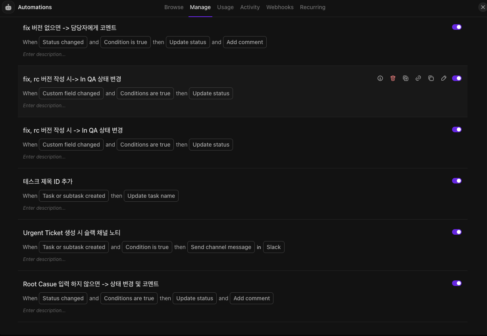
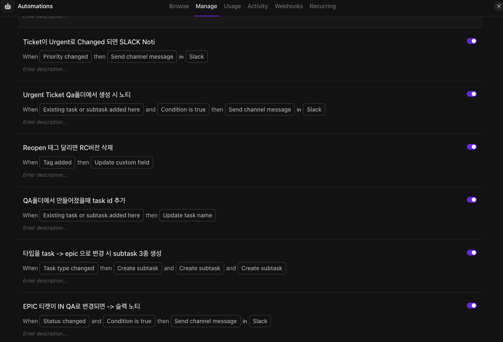
Root Cause 입력 하지 않으면 → 상태 변경 및 코멘트 — RCA未記入時に差し戻すルールfix, rc 버전 작성 시 → In QA 상태 변경 — バージョンフィールドをQA開始の条件にTicket이 Urgent로 변경되면 SLACK Noti — Priority SLAの「即時に全体共有」をルールで担保
画面は運用中のルール一覧の一部です。 Epic化したときのサブタスク3種の自動生成、Reopenタグ付与時のRCバージョン初期化、フォルダ単位のチケットID自動採番など、 チケットのライフサイクル全体で手作業が発生していた箇所をルールに移しました。
複数プロジェクトのQA依頼がDM・口頭・複数チャンネルに散らばって届き、バージョン・日程・範囲が抜けていることも少なくありませんでした。 スラッシュコマンド1つで受付を一元化し、その後の通知まで自動化しました。
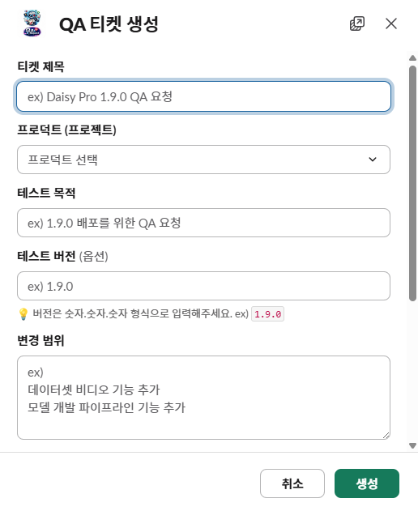
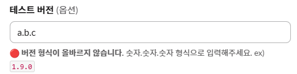
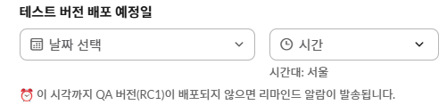
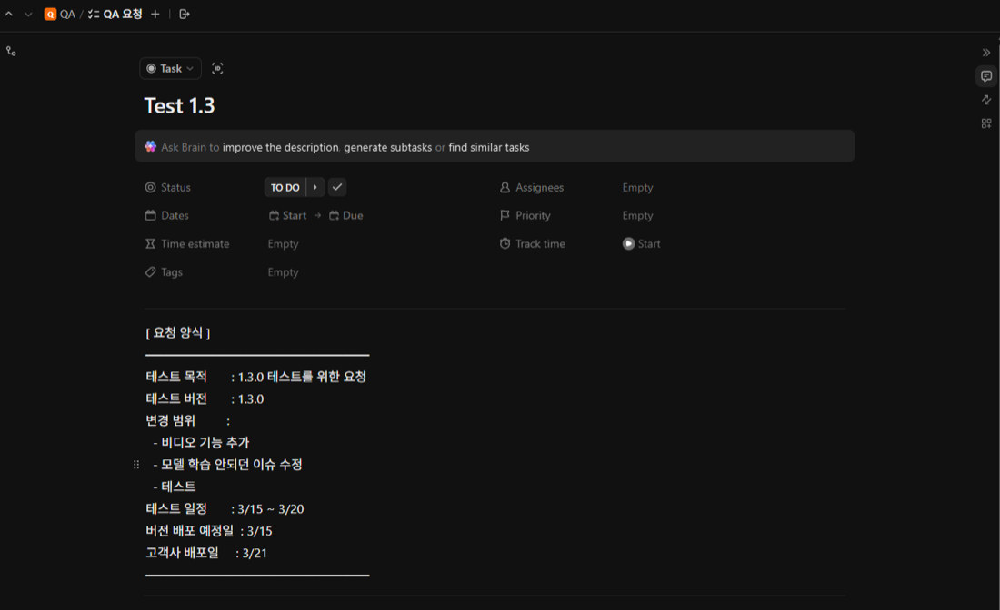
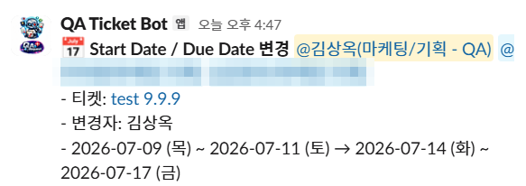
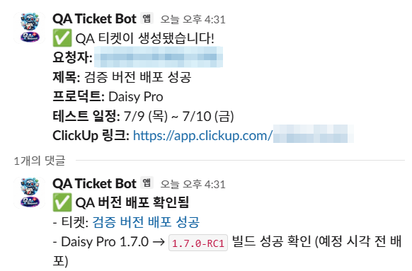
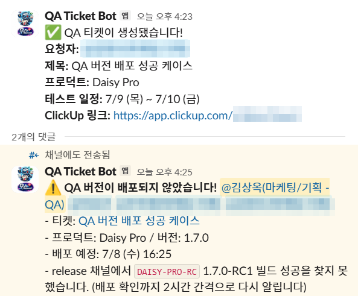
ボットがreleaseチャンネルのJenkinsのビルドメッセージを監視し、
チケットに書かれたバージョンのRC1ビルドが上がったかを自ら確認します。
予定時刻を過ぎても見つからなければ警告 + 関係者へのメンション、2時間おきの再通知、
24時間後に自動終了。
| 状況 | 素朴につくると | 実際の設計 |
|---|---|---|
| 日付を初めて設定 | 変更とみなして通知 | 通知しない — 変更・削除のときだけ |
| 開始日と期日を同時に変更 | 通知が2件 | 1件にまとめる |
| 予定時刻より前にデプロイ | 予定時刻まで待つ | 確認次第すぐ✅で完了 |
| 未デプロイが続く | 1回警告して放置 | 2時間おきに再通知 |
| いつまでも出てこない | 無限に繰り返す → 通知疲れ | 24時間後に自動終了 |
| デプロイ日が変更された | 古い時刻を基準に誤検知 | 1分以内に検知 → 新しい基準で再始動 |
| チケットが削除された | 孤立したリマインダーが鳴り続ける | 1分以内に自動で片付ける |
| 判定ルールのないプロダクト | 誤検知の通知 | チケットのみ作成 · リマインダーは動かさない |
未検証のビルドが顧客の現場にデプロイされるインシデントがありました。原因を追うと、個人のミスではなく 仕組みの空白でした — デプロイ対象の確認がバージョンラベルだけで行われ、 QAの検証完了とデプロイの決定の間に明示的なつながりがなかったのです。
インシデントを責任追及ではなくプロセス改善に転換し、 QAがリリースパイプラインの形式的な参加者ではなく、明示的な権限を持つゲートキーパーになりました。
「状況によって毎回違う」進め方だったRC検証を、繰り返し使える手順として確立しました。 QAの検証と開発の修正を並行させ、準備ができ次第デプロイ（上限は1営業日以内）して早期に収束させます。
| Exit Criteria | 基準 |
|---|---|
| 残存Urgent | 0件（最優先のゲート） |
| 残存High | 5件未満（1件ごとにPM・PLと協議） |
| Pass Rate | 95%以上 |
| Normal / Low | 個別のゲートは設けずPass Rateに含める → Known Issueとして管理 |
個々の案件で毎回議論する代わりに、数字で判定できる基準を定義して判定コストを下げました。 QAは基準を満たしているかを報告し、GO/NO-GOの決定はPMが行います — QAがビジネス判断を抱え込まず、品質の事実に集中できるようにするための分離です。 本番の緊急修正は、Full Testを省いて自動化による迅速な検証だけを行うHotfix専用トラックに分け、 緊急対応が通常の手順を崩さないようにしました。
| リリース | 判定 |
|---|---|
| 定期リリースA | TC 185件 · Pass率97.3%（基準95%以上）→ 通過 |
| 定期リリースB | 残りのUrgent・High 0件で通過 |
| RC3 · RC4 | 自動化された回帰テストにより同じ日に2つのRCを両方検証 （CASE-04） |
バージョンごとにマスターシートからテストケースをコピーし、結果を各バージョンのシートに散らばって記録していたため、 「このテストケースはバージョンを経てどうなったか」を見るには複数のシートを目で追う必要がありました。 回帰対象の選定・バージョン別のサマリー・トレーサビリティの根拠づくりも、毎回手作業でした。
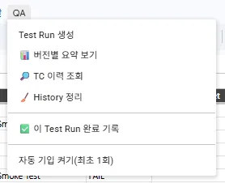
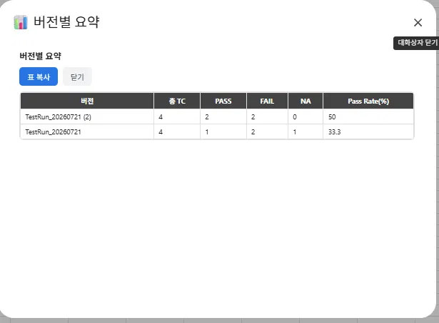
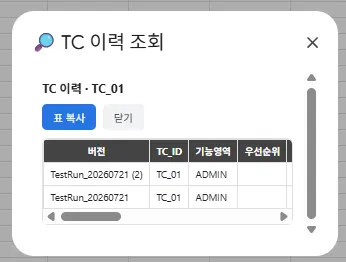
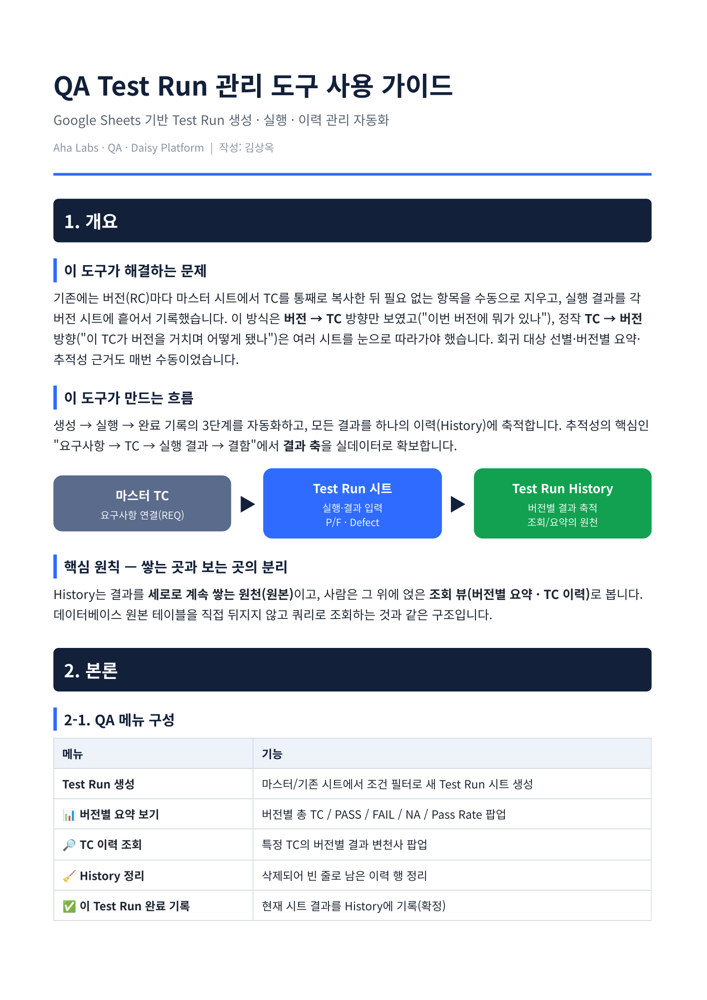
ソースを既存のTest RunシートのRC1にし、フィルターをP/F = FAIL, NAにすると、
RC1で失敗した、または未検証の項目だけがP/F空欄のまま引き継がれます。
RC検証手順の「Retest + Regression」を、手作業ではなくツールが計算します。
| 問い | 答え方 |
|---|---|
| カバレッジ — 今回のバージョンで何を検証したか？ | Test Runシート + 統計ブロック |
| 回帰対象 — 過去にFAILしたテストケースは？ | Historyのフィルター / 引き継ぎ作成 |
| デプロイ判断 — このバージョンのPass率は？ | バージョン別サマリー（Exit Criteriaに直結） |
| トレーサビリティ — このテストケースはバージョンごとにどうだったか？ | テストケースの履歴照会 |
不具合チケットは増える一方で、根本原因は自由記述で散らばるか、まったく記録されていませんでした。 「どの種類の原因が繰り返されているか」に定量的に答えられる人はおらず、 構造化したフィールドの導入を提案しても説得材料がありませんでした。
| 導入前の基準（1つのリリースライン） | 数値 |
|---|---|
| 不具合 | 272件 — うちreopen 17件・運用イシュー18件 |
| 自由記述のRoot Cause | 43%が1行だけ — 後から原因を分析し直せない水準 |
最初に必須化を持ち出したときは反発がありました。 そこで意見ではなく数字で話しました — 今のやり方で書かれた原因の43%が1行だけで、後から誰も分析し直せないこと、 実際のチケットをまとめると原因が10の類型で繰り返されていること。この根拠で説得して必須化し、 今ではこのフィールドがイシュー分析・インサイト導出・バグ予防に使われています。
サンプルではなく全件を見ました。分類体系を先に決めてチケットを当てはめたのではなく、 実際のチケットから繰り返しのパターンを抽出してカテゴリーをつくったため、現場の不具合の傾向がそのまま反映されています。